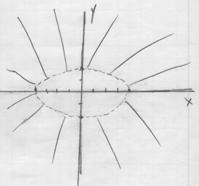
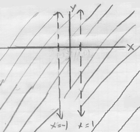
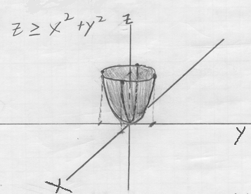
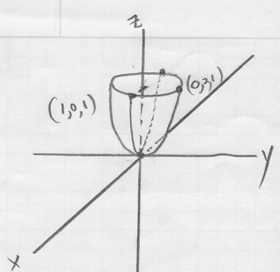
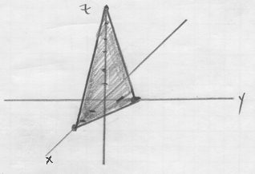
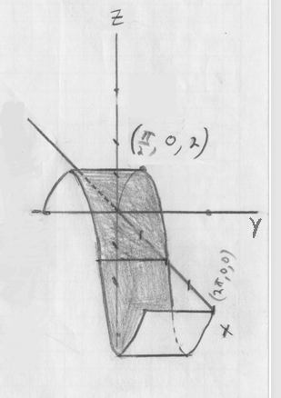
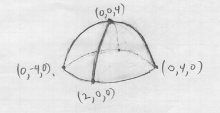
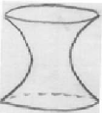

Homework Section 14.1 - Answers
-
Question 1
-
`f(85, 30) = 84`. This means that when the actual temperature is 85°F and the relative humidity is 30%, the perceived temperature is 84°F.
-
`T = 95`°F
-
`f(T, 50)` represents the perceived temperature as a function of just a single variable, the actual temperature T, when the relative humidity is held constant at 50%.
-
As the humidity increases, the perceived temperature `f(85, h)` increases.
-
-
Question 2
-
`f(3, -4) = ln(9 + 64 - 16) = ln(57)`
-
`D: {(x,y)| x^2/16 + y^2/4 > 1}`. That is, the domain is the exterior region of the ellipse defined by the inequality `x^2/16 + y^2/4 > 1`.

-
Range: `(-oo, oo)` or all real numbers.
-
-
Question 3
`D: {(x,y)| x != +-1}`. That is, the domain is the entire xy-plane except for the vertical lines at `x = 1` and `x = -1`.

-
Question 4
-
`f(1, 2, 5) = e^0 = 1`
-
`D: {(x,y)| z >= x^2 + y^2}`.

-
Range: `[1, oo)`
-
-
Question 5
- Elliptic paraboloid.

- Plane.

- Cylindrical surface.

- Upper half of an ellipsoid.

-
Question 6
- III
- I
- IV
-
Question 7
- Answers will vary but should be hyperbolas in the xy-plane.
- Answers will vary but should be vertical shifts of the graph of `y = -ln(x)`.
-
Question 8
The set of level curves in part (a) represents those of an elliptic paraboloid.
-
Question 9
Set `f(x,y,z)=1` to get a hyperboloid of one sheet: `x^2 + y^2 - z^2 = 1`.
